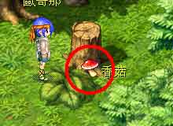

广场入口传点左下X142、Y1535，可以拿到─杂草 |
广场左边传点右方X542、Y1855，可以拿到─小雏菊 |
广场左边传点右方X742、Y1875，可以拿到─九层塔 |
广场下面左边X1102、Y1855，可以拿到─杂草 |
国会(?)后面左边X482、Y795，可以拿到─蘑菇 |
广场下方右边X2302、Y1735，可以拿到─波斯菊 |
 酒店二楼吧台，可以拿到─白兰地 |
酒店外右上X2502、Y175，可以拿到─无毒伞菇 |
|  酒店外右上X2802、Y295，可以拿到─香菇 |
教堂外左边X2722、Y755，可以拿到─纸沙草 |
教堂外右边X3902、Y1095，可以拿到─杂草 |
教堂外右下X3602、Y1295，可以拿到─水菇 |
基督海边传点右边X1822、Y475，可以拿到─杂草 |
基督海边码头X2762、Y535，可以拿到─菊花 |
基督海边传点左边X1502、Y775，可以拿─杂草 |
孩子王上面X2662、Y1135，可以拿到─杂草 |
孩子群右边X3022、Y1315，可以拿到─香菇 |
孩子群往左路旁X1862、Y1515，可以拿到─无毒伞菇 |
村长家右下X1142、Y1355，可以拿到─蘑菇 |
村长家门口左边架子上，可以拿到─门松 |
村长家外左边X602、Y1075，可以拿到─小雏菊 |
基督海边左边传点上方X242、Y1115，可以拿到─菊花 |
基督海边左边传点下方X222、Y1535，可以拿到─杂草 |
基督运河右边传点对面X2742、Y835，可以拿到─蘑菇 |
基督运河右边传点上面X2882、Y675，可以拿到─纸沙草 |
基督运河道具店左边X1382、Y1175，可以拿到─蘑菇 |
基督运河道具店左边X1402、Y1095，可以拿到─杂草 |
基督运河道具店上面X1602、Y795，可以拿到─蘑菇 |
基督运河道具店左上X1382、Y575，可以拿到─九层塔 |
基督运河道具店左上X1322、Y353，可以拿到─小雏菊 |
基督运河最左边下面X782、Y1135，可以拿到─小雏菊 |
基督运河左边传点右方X742、Y475，可以拿到─小雏菊 |
基督运河左边传点左方X562、Y375，可以拿到─杂草 |